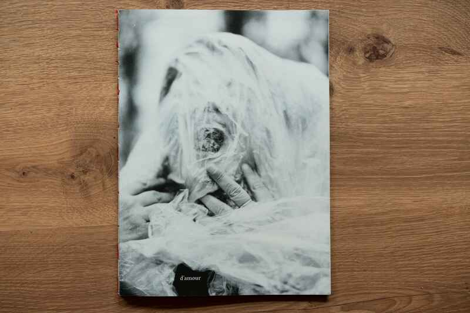
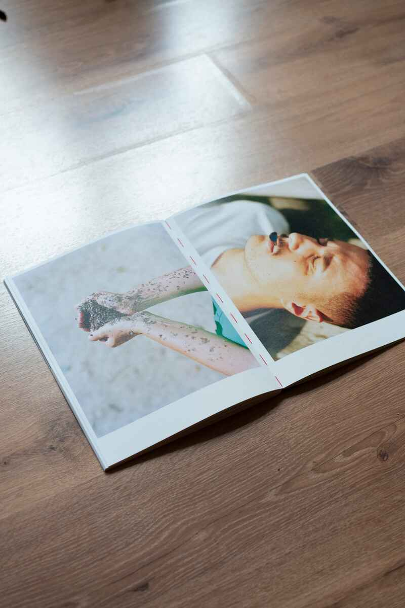
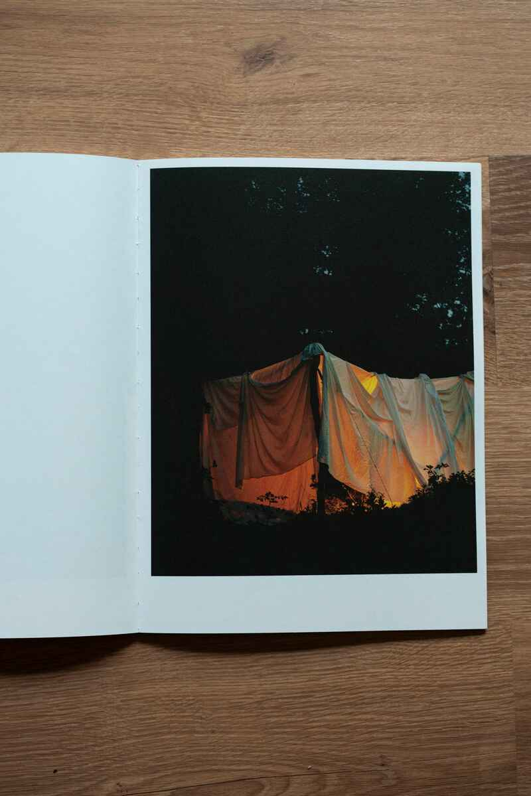
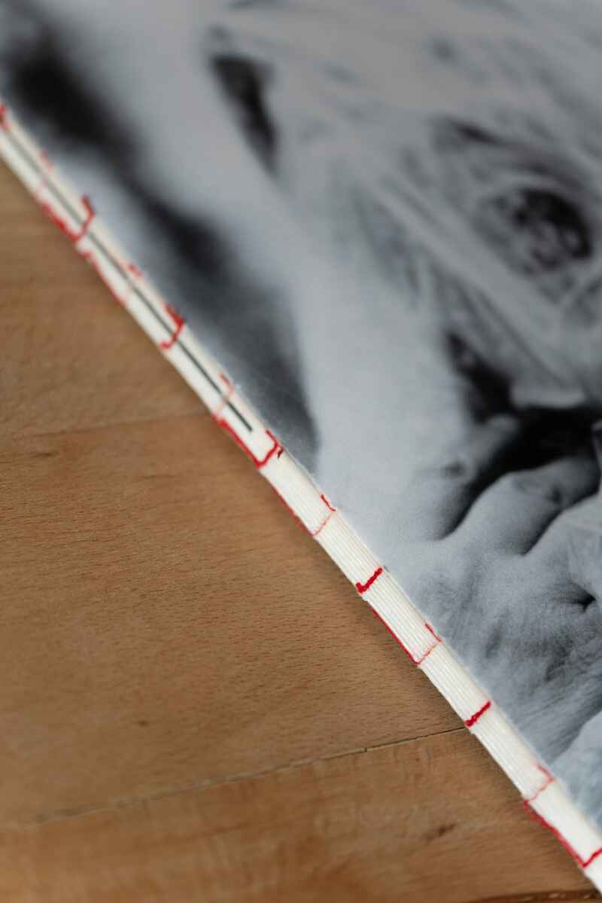
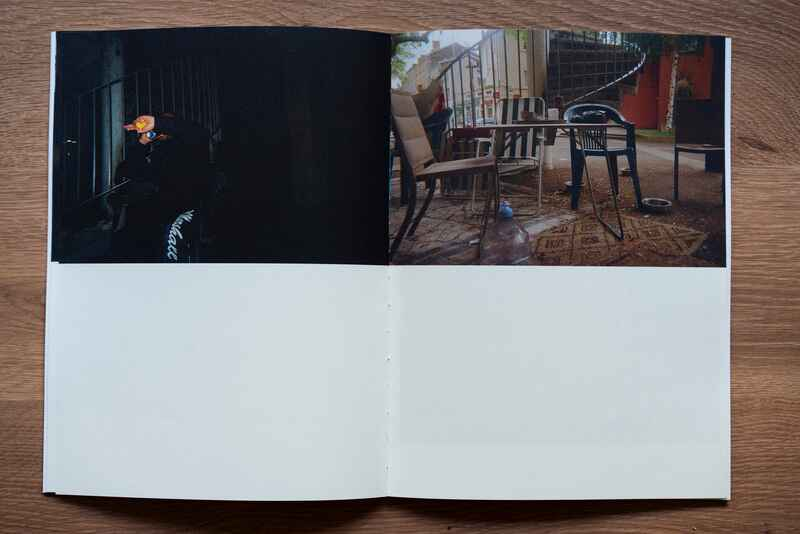
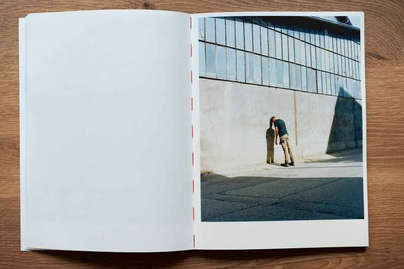
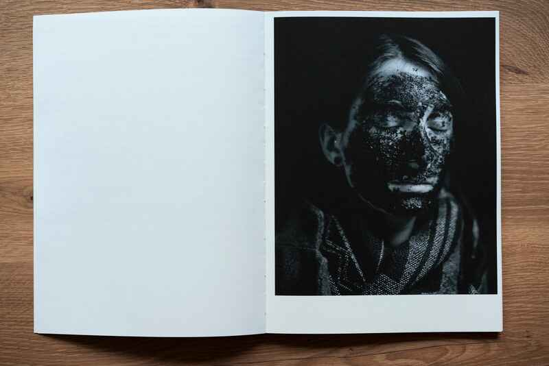
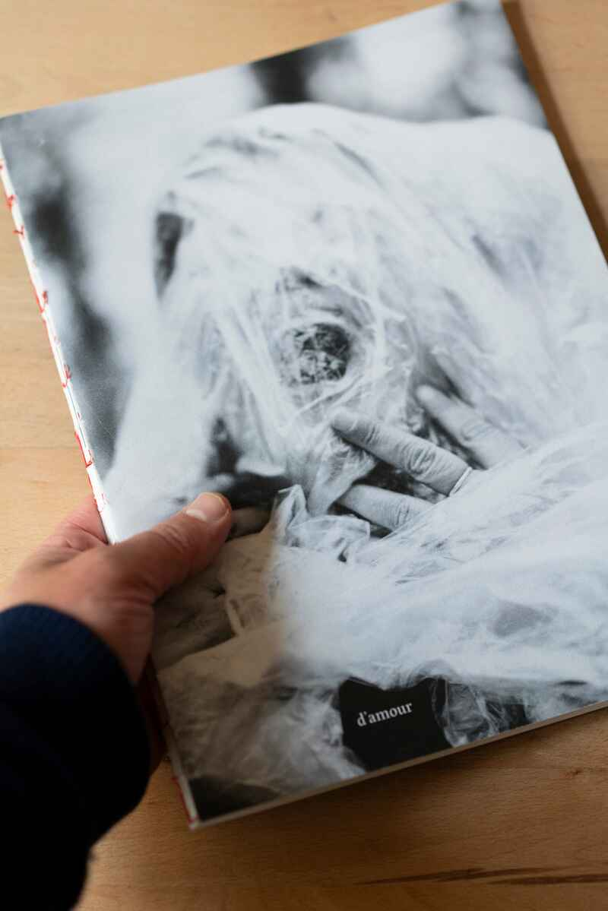

d'amour et de rage
Donna J. Haraway
d’amour et de rage est un travail commun, un travail d’écoute, d’attentions mutuelles et d’images pensées ensemble, réalisé à Givors lors de la résidence 5 étoiles à laquelle j’ai été invité par Stimultania.
Le titre est tiré du livre Vivre avec le trouble de Donna J Haraway. C’est bien de cela dont il s’agit dans ces photographies : comment vivre avec le trouble qui souvent percute nos vies ? Comment déployer sa puissance et sa tendresse dans un monde qui est nourri d’angoisses, de peur du lendemain, de solitude ?
Ensemble, nous avons imaginé ces œuvres comme des résistances, des actes d’affirmation de soi, des refuges pour les histoires qui dorment au fond de nos ventres. Des images comme des manifestes poétiques.
Avec Yamina, nous nous sommes racontés des histoires de corps qui encaissent, de cris réfrénés, de muscu nécessaire, de tendresses, de nid. Avec Élisa, des histoires de cendres dans les yeux, d’aveuglement, de regard franc, de terre qui colle aux pieds. Avec Nabil, le corps plié et le cœur dévoré par l’Usine, des histoires de tendresse malgré tout, de mots pour tenir et se sauver. Avec Thierry, des histoires de lieux saints, de refuge nécessaire, de lampe à pétrole, de géopolitique du corps, de valise et d’attente interminable. Avec M., nous avons pensé des histoires de peaux, de fuite et de marabouts. Avec Filipe, une histoire de cicatrice. Avec Amélie, les mots coquillage, graine, végétaux, des mots d’obligation de son corps de femme. Avec Medhi, des histoires de refuge quand on est sdf, de chien, de Dieu et d’alcool. Avec Mallory, nous avons raconté des histoires de place, de plante verte, de riches, du grand soir et du grand incendie.







